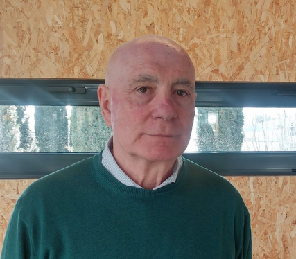

Conference
This international conference will be focused in the theory of orthogonal polynomials, and more specifically around the topics in which Francisco Marcellán has largely contributed, which include, among others:
- Orthogonal polynomials in all their flavours
- Approximation theory
- Painlevé equations
- Spectral theory of differential operators
- Integrable systems
The venue for the conference is the charming city of Cádiz, in the southwest Atlantic coast of Spain. Cádiz is one of the oldest cities in Europe, originally founded by the phoenicians, with more than 3000 years of history. With beautiful sunsets over the Caleta beach, amazing monuments, great food and charming people, Cádiz is the perfect place to enjoy a few days of mathematical interaction among colleagues.

Participants
Organizing Committee:
(Universidad de Cádiz) Manuel Mañas
(Universidad Complutense de Madrid)
(Baylor University & Universidad de Almería) Walter van Assche
(Katholieke Universiteit Leuven)
Invited speakers:
Alexander Aptekarev
Keldysh Institute MoscowAlfredo Deaño
Universidad Carlos III de MadridMariangeles García Ferrero
BCAM BilbaoAna Loureiro
University of KentWalter van Assche
KU LeuvenYuan Xu
University of OregonImportant Dates
1st Announcement:
Jan 3rd, 2022
Call for contributed talks:
Jan 15th, 2022
Deadline for submission of contributed talks:
Feb 25th, 2022
Communication of accepted talks:
Mar 11th, 2022
Registration opens:
Feb 15th, 2022
Registration closes:
Mar 30th, 2022
Paco Marcellán
Paco was born in 1951 in Zaragoza, Aragón, Spain, and decided to study Mathematics at the University of Zaragoza, getting his degree in 1973 with an Extraordinary Degree Award as well as the Spanish National Award for students of Mathematics. Three years later we got his PhD in Mathematics from the same University. He decided to stay at the University, and has been professor at the universities of Zaragoza, Santiago de Compostela and Politécnica de Madrid. Since 1991 till now he has been professor of Applied Mathematics at the Universidad Carlos III de Madrid. He also has visited, as a mathematical researcher, the universities Paul Sabatier (Toulouse), Pierre et Marie Curie (Paris), Denis Diderot (Paris), Sciences and Techniques de Lille, as well as visiting professor at the Georgia Institute of Technology, Atlanta, USA and Coimbra, Portugal. He has been a Special Visiting Researcher at the Department of Applied Mathematics of the Universidade Estadual Paulista (UNESP) within the framework of the Ciencia sem Fronteiras program of the Government of Brazil from 2013 to 2015.
His research activity is mainly focused on approximation theory, orthogonal polynomials, special functions and their applications in Mathematical Physics. In these directions he has analyzed structural properties of orthogonal polynomials in relation to different models of orthogonality, combining techniques of matrix analysis, operator theory, classical analysis and harmonic analysis. He also has about three hundred research papers in high impact international journals and has been the editor of more than 20 conference proceedings and is the author of six teaching monographs. Paco has been a member of the Organizing/Scientific Committees of more than 100 mathematical meetings.
He has been the supervisor of 41 PhD students in this area of Applied Mathematics. He has belonged to the editorial committees of, among others, the Journal of Approximation Theory and Electronic Transactions in Numerical Analysis. He is a corresponding academic of the Academies of Exact, Physical and Natural Sciences of Colombia as well as those of Granada and Zaragoza. He has been Program Director (1999-2004) and Chair (2008-2013) of the SIAM Activity Group on Orthogonal Polynomials and Special Functions, He has been First Vice President of the Royal Spanish Mathematical Society (RSME) in the period 2012-2015, the President of the RSME (2015-2022) and also President of the Spanish Committee of Mathematics (CEMat) in the period 2016-2019.
He has held university management positions as Chair of the Engineering and Mathematics Departments, respectively, of the Universidad Carlos III de Madrid as well as Vice-Chancellor for Research at this university (1995-2004). He has been director of ANECA (2004-2006) and Secretary General of Scientific and Technological Policy in the Ministry of Education and Science (2006-2008).
All this activity in Mathematics and in Science requires a big amount of energy, capacity, and compromise, and deserves recognition and the tribute that, in this small fest, we humbly offer to him on the occasion of his retirement.